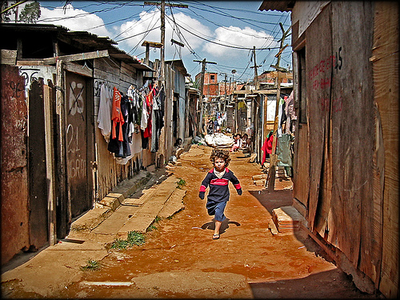
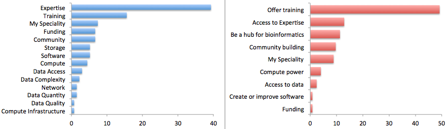

Software Carpentry:
Lessons Learned

Greg Wilson
We teach lab skills
for scientific computing
Why We Exist
 |
 | |
| HPC, cloud, Semantic Web | the other 90% of scientists |

If you build a man a fire,
you'll keep him warm for a night.
If you set a man on fire,
you'll keep him warm for the rest of his life.
— Terry Pratchett
Since January 2013:
320 workshops
11,000 learners
353 qualified instructors
Where We've Been
Who We Are
Lesson #1:
Most scientists think of programming
as a tax they have to pay
in order to do science.
Lesson #1:
They don't want "best practices"
because they're not trying to be
"best programmers"
Lesson #2:
They don't care about reproducibility
Five million papers published 1990–2000.
100 retracted because of computational irreproducibility.
Average paper takes eight months to produce.
Scientists work six-day weeks.
Only worth 115 extra seconds per paper on reproducibility.
Lesson #3:
They care a lot about productivity
So that's how we get them to listen
Fear makes people more conservative
If you want change, you need to sell hope
And they want training
Source: Bioinformatics Resource Australia:
BRAEMBL Community Survey Report, 2013
Lesson #4:
The curriculum is full
5 minutes per lecture is still 4 courses in a 4-year degree
Lesson #5:
Nobody knows anything.
We don't know how to measure programmers' productivity
We don't know how to measure scientists' productivity
The unknowns do not cancel out
Our Solution
Two-day workshops
Scientists teaching scientists
Teach them how to teach
Open, collaborative lesson development
What We Teach
Unix shell
Git / GitHub
Python (or R)
SQL
=>
=>
=>
=>
task automation
tracking and sharing
modularization
structured data
How We Teach
Hands on
Live coding
Useful first
How We Manage Workshops
Two days
Host covers costs
We find people
Group sign-up
Registration fee
Debriefing
Why Volunteer?
Save the world
Make new friends
Self-defense
Learn things
Boost their careers
What Winning Looks Like
| Number of Reviewers | 2 | 3 | 4 | 5 | ||||
| Fraction of Papers | 10% | 40% | 40% | 10% | ||||
| P(someone asks hard questions) | 50% | |||||||
| P(single reviewer is a believer) | 18.3% | |||||||
We only have to change the minds of 1 scientist in 5
There's more in the papers:
Best Practices for Scientific Computing
Software Carpentry: Lessons Learned
So How Are We Doing?
"We save researchers a day a week
for the rest of their careers."
Anecdotal
Subject to sampling bias
We change what people do,
so quantitative measures aren't helpful
So How Are We Doing?
Need answers for funders
More importantly, to tune our teaching
"Half of what we teach is useless:
we just don't know which half."
Speaking of changing
what people do...
Lesson #6:
Cloud computing isn't the revolution
Or open access, or reproducibility...
It's massive collaboration
Not Like the Others
edited a Wikipedia page
✔
patched an open source project
✔
patched someone else's lesson
✖
Why isn't this normal?
Not Like the Others
If the reasons I've thought of are true,
Wikipedia, open source, and textbooks
shouldn't exist
But It Could Be
We're making some progress on this
software-carpentry.org/lessons.html
Making this normal could be
our real contribution
How NIH Can Help
Become a partner
Responsible Conduct of Research
We need more science, more courage, and more collaboration
Thank You
gvwilson@software-carpentry.org